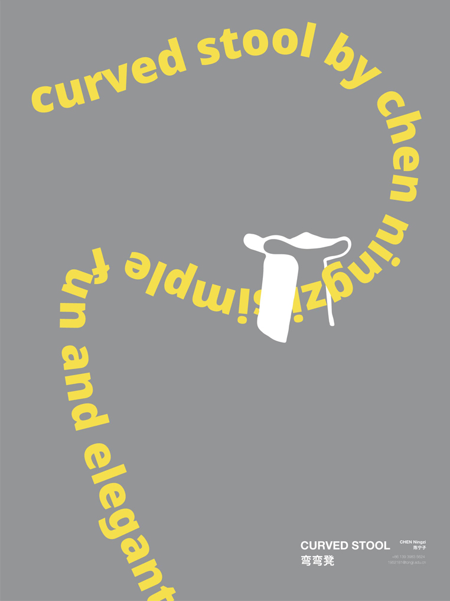
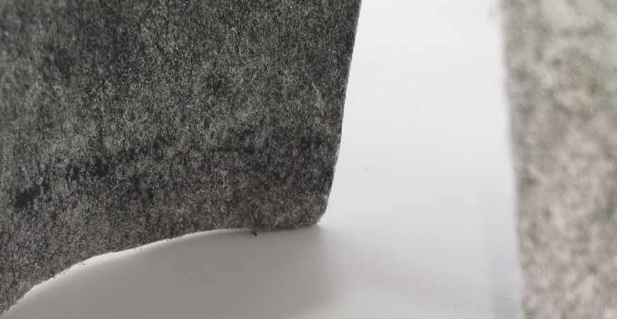
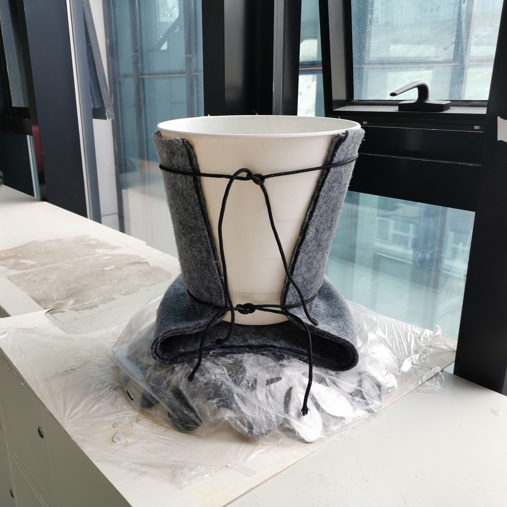
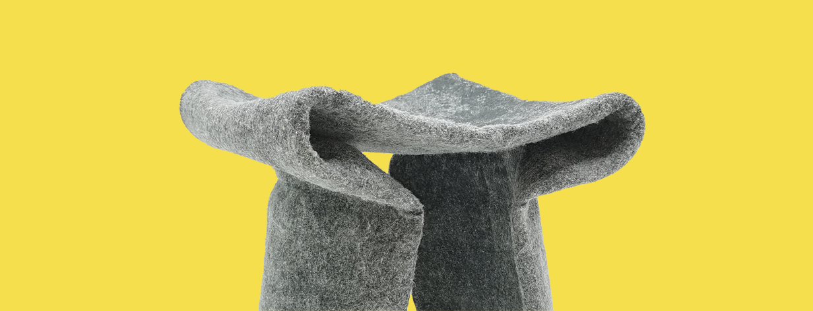

Curved Stool
Chen Ningzi, 2020
material:
resin, felt, IKEA products我对黑客精神的理解是挑战现有产品的成型方式、挑战视觉和使用的一致性。因此我把宜家的垃圾桶和盘作为凳子成型的模具，覆盖用环氧树脂浸透的毛毡并固化，形成一个看起来软坐起来坚固的凳子。
My understanding of the spirit of hackers is to challenge the way existing products are shaped, to challenge the consistency of vision and using. So I used IKEA's trash can and plate as a mold for stool forming, had it covered with epoxy impregnated felt and cured to form a stool that looks soft and sits firm.

